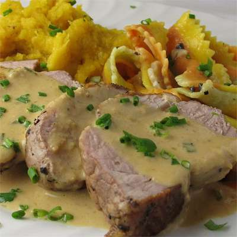

Pork Tenderloin Diablo

Description
If you love pork tenderloin, you'll love this recipe! Mustard, horseraddish, and a dash cayenne and cream combine to make a unique
zesty sauce that will taste so good it seems wrong. If you eat pork, this is a must try recipe. It's also extremly easy to prepare,
so no matter your cooking expierence, you can whip up this dish in less than an hour!
Ingredients
- 1 (1 pound) whole pork tenderloin
- salt and freshly ground black pepper to taste
- 2 teaspoons vegetable oil
- ½ cup chicken broth
- 2 tablespoons heavy cream
- 1 tablespoon extra-hot prepared horseradish
- 1 tablespoon Dijon mustard
- ¼ teaspoon cayenne pepper
- 1 tablespoon cold butter
- 1 teaspoon chopped fresh chives
Steps
- Preheat oven to 375 degrees F (190 degrees C). Season pork with salt and pepper.
- Heat oil in an ovenproof skillet over high heat.
Cook pork until browned on one side, 3 to 4 minutes.
Turn over pork and transfer the skillet to the preheated oven.
Cook until pork is browned and still slightly pink in the center, 20 to 25 minutes.
An instant-read thermometer inserted into the center should read at least 145 degrees F (63 degrees C). Transfer pork to a plate.
- Remove any excess oil from the skillet and place it over medium-high heat.
Pour in chicken broth and bring to a boil, scraping any browned bits off of the bottom of the pan.
Whisk in cream, horseradish, Dijon mustard, and cayenne pepper.
Continue cooking until the mixture is reduced to a thick sauce, 3 to 4 minutes. Remove from heat and whisk in cold butter.
Stir in chives.
- Slice pork into 1/2-inch slices and serve topped with sauce.
Disclaimer
This Porked Tenderloin Diablo recipe and steps were copied from All Recipes,
and is only being used for development learning purposes for The Odin Project's HTML recipe project, and in no way for monetary benefit.